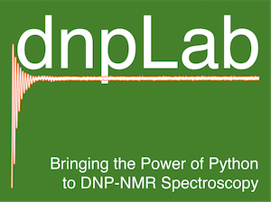

dnpLab 
1.0
Documentation:
1. Introduction to dnpLab
2. Installing dnpLab
3. Quick-Start Guide
4. dnpLab Examples
5. dnpData
6. dnpImport
7. dnpNMR
8. dnpFit
9. dnpHydration
10. dnpResults
11. hydrationGUI
dnpLab
Docs
»
Search
Please activate JavaScript to enable the search functionality.